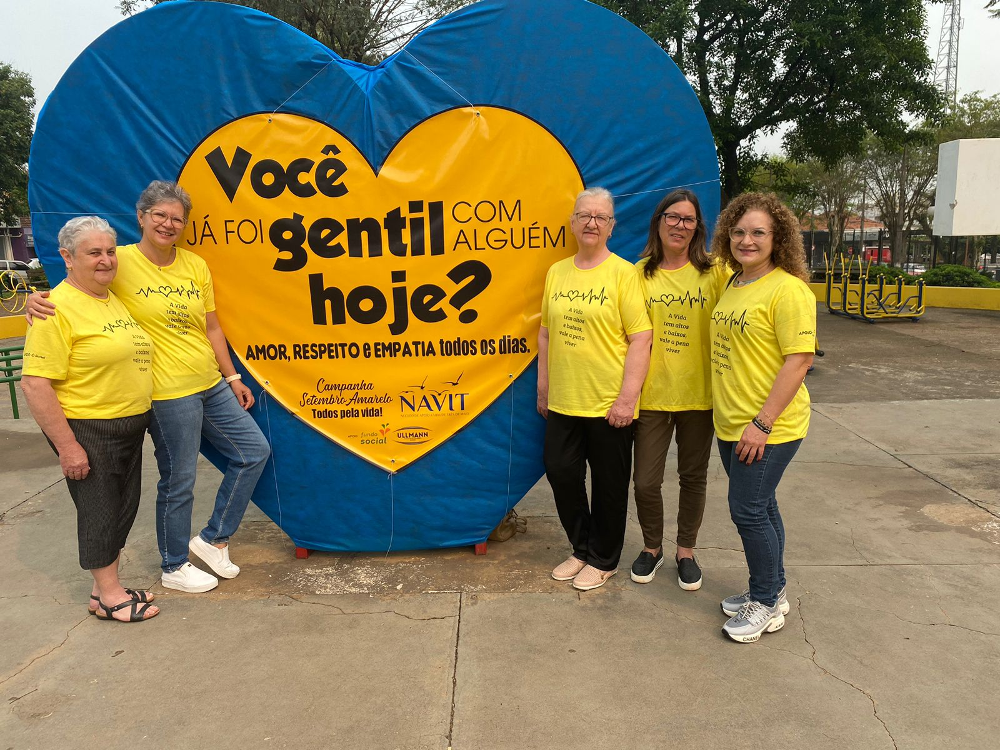

Conversas que acolhem, fortalecem e geram ligação — pensadas para transformar o cuidado emocional em algo presente na comunidade.
A
O que acontece
Rodas temáticas (luto, ansiedade, autocuidado, relações)
Dinâmicas práticas que ajudam a organizar sentimentos
Espaço para quem quer ouvir e para quem quer partilhar
B
Por que participar?
Porque conversar transforma — partilhar reduz o peso, a escuta qualificada abre caminhos e a conexão humana reconstrói forças.
Formato: encontros de 60 a 90 minutos • Temas variados • Gratuito e aberto à comunidade
Setembro Amarelo - Prevenção ao Suicídio
Campanha Anual • Setembro
🌻 Setembro Amarelo - Mês de Prevenção ao Suicídio

O Setembro Amarelo é uma campanha de conscientização sobre a prevenção do suicídio. Durante todo o mês, o NAVIT realiza atividades especiais de apoio, informação e acolhimento à comunidade.
💛
Atividades do Setembro Amarelo
Rodas de conversa sobre saúde mental e prevenção
Palestras educativas em escolas e instituições
Distribuição de materiais informativos
Ações de conscientização em espaços públicos
Iluminação amarela de monumentos públicos
Caminhadas e eventos comunitários
🤝
Como participar
Participe das atividades, compartilhe informações sobre prevenção, use amarelo em setembro e ajude a quebrar o tabu sobre saúde mental. Juntos podemos salvar vidas.
Lembre-se: Se você ou alguém que você conhece está passando por um momento difícil, procure ajuda. O CVV (Centro de Valorização da Vida) oferece apoio emocional gratuito 24 horas por dia pelo telefone 188 ou chat em cvv.org.br
Como participar
As datas e horários são divulgados nas redes sociais do NAVIT e na nossa página de eventos. Para receber informações por mensagem, inscreva-se através do formulário abaixo ou entre em contato com a equipe.
Observação: todos os encontros são gratuitos, voluntários passam por orientação para condução e o espaço preserva sigilo e respeito a cada participante.
Entre em Contato
Para mais informações, dúvidas ou para participar das nossas atividades, entre em contato: